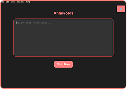

Portfolio
Active Project
A project I've been working on with @Aryatar was named “ANNIK-A”. Don’t question the name, it’s not final.
Here you can see a little cutout where you can see a little bit, what it could be. Hint: it’s for a videogame
Finished Project
This is a Project named AnniNotes, a notes app made by yours sincerely. The special thing on it is, it works with sql, markdown and even AI to help me organize things.
Here is how the app looks right now. The most things happen in the background and there is another window to actually search and manage the notes.
Questions?
If you are interested, send me a message here